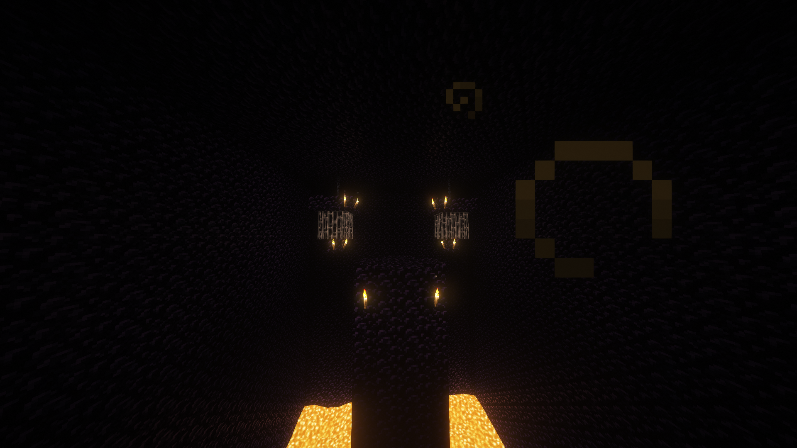
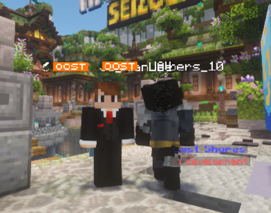

Het nieuws uit Oost & omstreken
De Oostelijke Krant
HET EINDE VAN DE KRANT?
LOCKDOWN · Locatie: Oost · Tijdsblok: 20:30–21:15
Vandaag was een spannende dag in de gehele SMP. Om 20:30 begon de PURGE. Wat volgde was vijfenveertig minuten pure chaos. De straten liepen leeg, deuren gingen dicht en spelers doken onder. Rond 21:15 keerde de rust langzaam terug, maar de schade was al gemaakt.
Het nieuwe gevangeniscomplex van OOST stond op scherp; een groot deel was net klaar en werd in één keer geconfronteerd met de eerste aanvallen. De totem van MeneerSandwich popte, ItzJits werd aangevallen en het gerucht circuleerde dat skoebidoemannen verantwoordelijk was voor het grootste deel van de uitschakelingen. Meerdere bronnen noemen hem als de “Butcher van OOST”; deze editie meldt dat hij tijdens de PURGE een majeure rol speelde in de uitbarsting.

De eindredacteur van de krant, 
Totem en verdediging
De totem van MeneerSandwich faalde tegelijk met de eerste vuurlinie van Oost. Zodra het licht uitviel, verloor de verdediging de zichtlijn over het oostelijke centrum. ItzJits en de aanwezige verdedigers probeerden de zuidzijde van het kasteel open te houden, maar zonder dat signaal was aansturing van tegenaanvallen vrijwel onmogelijk.
Redactie in de toren
De redactiekamer en het interviewpunt lagen twee verdiepingen hoger.
Strategie en evacuatie
Het geweld dwingt Oost in een verlaagde paraatheid. De andere redacteuren maakten zich uit de voeten, tekenen van controle zijn tijdelijk vervangen door een herstart in kleinere communicatiekanalen. Vooralsnog bestaat de krant slechts uit officiële mededelingen, zonder volledige edities. De staf probeert de veiligheid te waarborgen voordat er weer verslag kan worden gedaan.
Vooruitblik
Oost herstelt de zuidmuur van het kasteel en versterkt de kazerne met extra signaleringen. Wat nog resteert is een vraag van de gemeenschap: zal de krant ooit terugkeren, misschien tijdens de volgende uitbarsting van de vulkaan?
Dankwoord van de redactie
De Oostelijke Krant werd gebouwd op verhalen, op avonturen, op vriendschap én rivaliteit.
Van kleine conflicten tot grote veldslagen, van politieke oprichtingen tot onverwachte allianties — elke editie was een momentopname van een levende wereld.
Aan iedereen die informatie aanleverde, gebeurtenissen deelde, screenshots stuurde en zijn energie gaf aan de geschiedenis van OOST: dank. Jullie maakten deze krant meer dan tekst alleen; jullie maakten het een archief van herinneringen.

Zal de krant terugkeren tijdens de uitbarsting van de vulkaan?